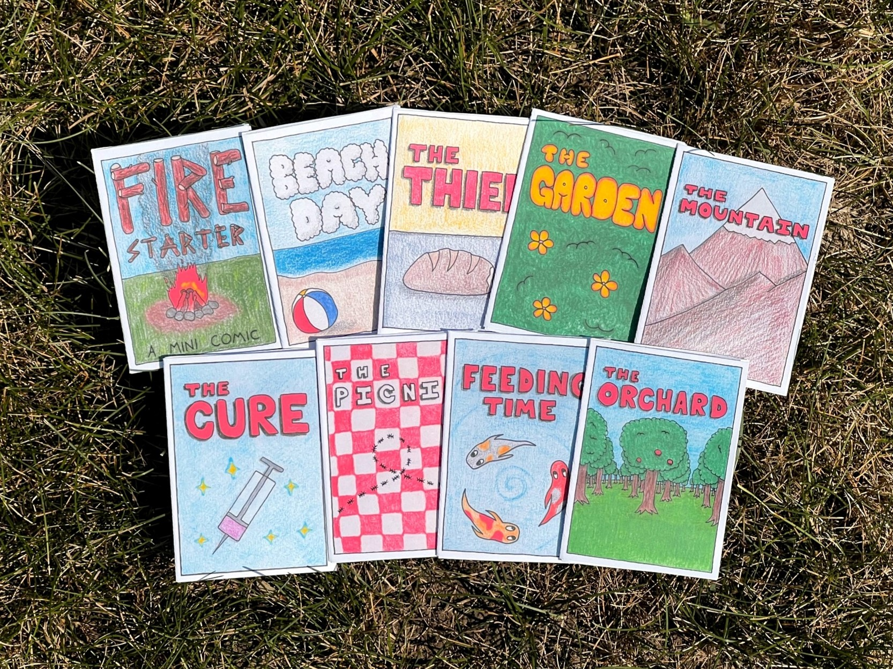
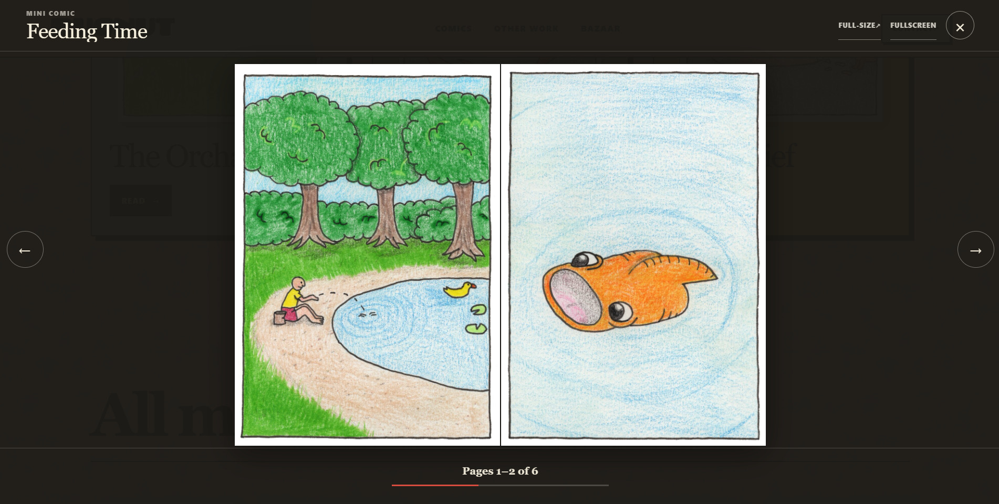

- Sort and rename pages
- Rotate and resize images
- Remove metadata
- Create a cover thumbnail
- Count pages and spreads
- Edit the site catalog
- Check every route
- Publish
Case study 03
Publishing system · 2026
Bugnut
I fell in love with making small hand-drawn comics, then built the public reader and publishing tools I wanted as the collection grew. The site now holds 14 works and 94 pages.
- Role
- Product design
Frontend + tooling - Application
- Next.js, React
TypeScript - Tooling
- Node.js, Sharp
Content validation - Published collection
- 14 works
94 pages

The site began with the comics.
After months of drawing mini-comics, I wanted a permanent archive that felt like my work and a reader that did not get between the artwork and the person reading it. I also sell physical copies online and through local shops and events, so the site needed a direct path from reading to the shop.
Resizing and renaming every image was the most annoying part of publishing a comic. Each upload also needed a thumbnail, metadata, spread information, and a check of the finished site. As the collection grew, I wanted the importer to handle that preparation for me.
I did not need a full content management system. I needed a tool that understood the folders I already exported and asked me only for information it could not work out on its own.
The reader adapts to the comic and the screen.
Some pages are meant to be seen as spreads. That works on a wide screen, but shrinking two pages side by side on a phone makes the drawings hard to read. The reader groups pages differently based on the available width.
On desktop, compatible pages can open together as a spread. On a narrow screen, the same work becomes a single-page sequence. The current page is stored in the URL hash, so a reader can share or reload a specific point without an account or database.
The modal reader supports arrow keys, swipe gestures, fullscreen mode, and Escape. It traps focus while open, returns focus to the launch control when closed, and preloads the next page group so navigation feels immediate without downloading the entire comic at once.

I turned the checklist into one command.
The guided importer asks for the source folder, title, type, date, and a few optional choices. It gets the rest from the artwork.
- Drop exports in a folder
- Run npm run add-comic
- Confirm detected order
- Answer short prompts
- Preview and push
What the command does
- Sorts the input files and asks me to confirm the reading order.
- Copies the source artwork, then writes sequential JPEG files without changing the originals.
- Uses Sharp to rotate, flatten, resize, and remove metadata from each image.
- Creates a gallery thumbnail and counts the pages.
- Finds landscape pages that should be displayed as two-page spreads.
- Updates the site catalog, sorts the work by date, and runs the content checks.
# Start the guided importer
npm run add-comic
# The build repeats validation before export
npm testThe app builds its catalog from the comic folders.
An AI coding assistant recommended Next.js. I specified the publishing workflow around the work I wanted to eliminate, especially resizing and renaming pages. The frontend uses React and TypeScript, with Next.js exporting static files for GitHub Pages.
Each comic has its own folder with numbered page images and a small comic.json file. The JSON
contains the title, date, and other details the script cannot learn from an image.
I do not store the page count in two places because the script can count the files. It can also create the thumbnail and detect spreads again whenever the catalog is rebuilt. The Next.js app reads the generated catalog rather than maintaining another hand-written list.
- Artwork folder Source exports
- Node pipeline Normalize + derive
- Next.js app Reader + galleries
- GitHub Pages Static delivery
A few simple conventions
Pages are named 001.jpg, 002.jpg, and so on. The importer creates those names and
writes the metadata in the format the app expects. I do not have to remember the rules each time.
Bad content stops the build.
The pipeline checks slugs, dates, content types, page order, missing files, and rules for each kind of
work. A one-page drawing cannot quietly contain several pages, and a comic cannot skip from
003.jpg to 005.jpg. The command stops and explains the problem before anything is published.
The production test command builds the full Next.js site and checks the rendered HTML. GitHub Actions repeats the same preparation and tests before it publishes a static export. My local preview and the live site go through the same process.
I can publish without editing the app.
Bugnut currently publishes 14 works and 94 pages. To add another, I choose its folder, answer a few prompts, check the preview, and push the result. The public reader stays fast because Next.js exports the site as static files.
I use the importer for each new comic. If a prompt is confusing or a step takes too long, I encounter the same problem on the next upload and can fix it in the tool.
Readers can read the comics online for free and buy printed copies from the Bugnut shop (opens in a new tab).